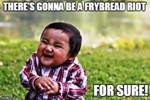

Auf dieser Seite
zeigen wir überwiegend kalte Gerichte und Knabbereien, die
man meistens auf die Schnelle zwischendurch verzehrt. Es
sind z.T. vollwertige warme Gerichte. - Liptauer,
Lángos, Pogatscha und diverse Aufschnittplatten sind
ideale Vorbereitung auf die Verkostung von
Ungarnwein direkt
vor Ort in einem der vielen Weinkellern des Landes oder auf
ein Erfrischungsgetränk, wie Spritzer (Schorle), Bier oder Ihr
Lieblingslimo.
Gänseleber gehört heute auch bei vielen christlichen Ungarn
gelegentlich auf die Brotzeitplatte.
Die beste Brotzeitplatte, die wir in Ungarn je genossen haben,
wird im
Eszterházy Weinkeller
in
Szigliget
am Balaton serviert, so wie am Bild oben links.
Autofahrer trinken alkoholfreie Getränke dazu, weil in Ungarn auf
allen Strassen Null Promille ohne Toleranz gilt. Die
folkloristische, tänzerisch-musikalische Unterhaltung im Eszterházy
Keller bleibt
ein unvergessliches Erlebnis ein Leben lang. Für Gruppen wird eine
Voranmeldung dringend empfohlen. Die anderen Bilder zeigen zwei
Varianten von Fatányéros, so wie sie bei
Ilona
in Wien serviert werden. Am Bild in der Mitte ist eine
kalte Fatányéros Aufschnittplatte und rechts davon eine warme
Fatányéros Grillplatte auf
Siebenbürger Art zu sehen. Klicke auf die Bilder!
In der Gastronomie wird Fatányéros
(dt. Brotzeitplatte) für Kleingruppen von bis zu 3-4-Personen zusammen
serviert. Man wird schneller satt, als man beim Anblick der Platte
denkt.
Die eigens für Fatányéros
(dt. Brotzeitplatte) handgemachten Holzplatten werden
mit landestypischen, meistens hausgemachten Spezialitäten
aufgefüllt, wie Schinken,
Wurst, Gänseleber, Pastete, Käse, Gemüse, Früchte u.a.
Warme Brotzeitplatte
gibt es auch! In der bäuerlichen Küche beispielsweise so aus dem Backofen, wie am Bild links.
Besonders beliebt ist in Ungarn das Rindfleisch aus der Suppe, das man möglichst heiß mit Meerrettich,
evtl. mit Senf und Brot verzehrt. In der Rindfleischsuppe wird immer viel Gemüse, bevorzugt Karotten und Petersilienwurzel mitgekocht, auch das gehört auf die warme Brotzeitplatte.
Markknochen waren schon immer eine besondere Delikatesse. Dabei sind sie gesund und wirken kräftigend
auf den geschwächten Körper. Das Rindermark schmiert man am besten auf geröstete Landbrotscheiben, nur in Restaurants soll es elegant
sein, wenn man das pappige Toastbrot dazu bekommt. Auch schon
deswegen schmeckt eine solche Platte am besten zu Hause, wo man
all das direkt aus dem Topf heiß bekommt. In Ungarn ist das ein
genauso beliebter Genuss mit Bier, wie Brotzeit in Bayern - es
geht leider aus der Mode, weil die Restaurants wenig daran verdienen.
Fett ist das erste, was einem jeden Deutschen hierzulande
einfällt beim Anblick dieser in Ungarn beliebten Delikatesse
auf einer Brotzeitplatte oder am Frühstückstisch. Fett ist
jedoch bisher das einzig bekannte Lebensmittel, das unser
Immunsystem kräftigt und ist somit gesund..
Zubereitung: den Speck in gleich große Stücke
schneiden und mundgerecht weichkochen. Gewürzt wird nach eigenem Geschmack, indem
man die Speckoberfläche mit Gewürzpaprikapulver, Pfeffer
und/oder kleingehacktem Knoblauch beschmiert. In
Klarsichtfolie gewickelt die Würzmittel ca. 1 Woche im
Kühlschrank ziehen lassen.
Hausmachter Käse / Házi sajt
Dieses Grundrezept ist unser Geheimtippp aus sehr alten Kochbüchern mit
dem Hinweis: Von diesem Rezept wollen die Kuhbauer und
Käsehändler nicht hören, weil: Wer das
Rezept einmal probiert, kauft nie wieder Käse.
Zutaten: 1 L Milch (mindestens 1,5%), 500 g Topfen (Quark, körniger Hüttenkäse), 100 g
Butter, 1 Ei, 1 TL Natron oder 3 Tabletten Bullrich Salz (gibt
es immer in jedem Haushalt in der Notfallpotheke).
Zubereitung: Milch mit Topfen gemischt einmal
aufkochen und durch ein sehr feines Sieb abtropfen lassen. Die
geschmolzene Butter unterrühren, das Ei und Natron
untermischen. Aufkochen und bei geringer Wärme 10 Minuten
köcheln lassen, dabei ständig rühren. In eine Königskuchenform
füllen und auskühlen lassen. Je länger die Masse in der Form
ist, umso härter wird der Käse. Am Folgetag ist er sogar
geeignet für die Reibe.
Geeignete
Würzmittel für diverse Geschmacksrichtungen:
Kräuter,
Schnittlauch,
Knoblauch,
Kümmel u.a.
Liptauer Brimsen / Liptai túró, Körözött
Der Liptauer oder Liptauerkäse ist
ein Brotaufstrich, vergleichbar mit dem bayerischen Obatzter.
Letzterer wird auch Obatzda, neulich immer öfter nur noch
Obazda genannt, weil die meisten Zugereisten Wirtshausgäste
mit dem Begriff Obatzter (Hochdeutsch: ein Batzen darauf)
nichts anfangen können. Während zum Obazda die gärfaulende
Schärfe von Camembertkäse
im letzten Moment
kurz vor dem Verderben mithilfe von Gewürzzutaten übertönt und somit abgemildert, bzw. gerettet wird,
verwendet man im Liptauer immer nur frischen Schafskäse, wenn verfügbar
Brindzakäse, einen pikanten Frischkäse aus Schafsmilch. Das
Rezept für Obazda entstand in einem Wirtshaus in Bayern
im Jahre 1920, so handelt es sich um die Abkupferung der
Rezeptur für den Liptauerkäse, der damals in Österreich und Bayern
schon lange gut
bekannt war. Das sollte hier ein Hinweis auf die
Missachtung der Gesundheit der Gäste in der bayerischen
Gastronomie aufzeigen, wo auch noch die Verwässerung der Obazda mit
billigem Bier oder Wein zugelassen ist für die
Wirtschaft und nicht für die Gesundheit der Gäste.
Das Rezept für den Liptauer entstand in
einer Zeit, als die Gegend noch bei Ungarn war, der Legende
nach etwa im 13. Jahrhundert. Die Bezeichnung Liptau hat
wenig mit der Region Liptau (heute Liptov in der Slowakei)
zu tun, er kommt aus der Erkenntnis, dass der Hirtenkäse aus
Schafsmilch zu diesem Gericht damals vorzugsweise aus der
Gegend von Liptau, nahe zur heutigen polnischen Südgrenze bezogen wurde.
Liptau liegt heute in der Slowakei und die nach eigener
Identität strebenden Slowaken versuchen in Ermangelung
dessen eine eigene Nationalspeise daraus zu erkoren und
dabei nicht realisieren wollen, dass die Grundlage für den
Liptauer der Brindzakäse eine Spezialität der Walachen ist,
die in früheren Jahrhunderten in den Hochlagen der gesamten Karpaten
als Schafshüter nomadisierend
lebten, so auch in der Liptauer Gegend.
Laut EU-Richtlinien ist Brindza heute ein
geschütztes Produkt in der Slowakei und auch in Polen und man staune: auch die nach eigener
Identität strebenden Rumänen behaupten, der Brindzakäse, die
Grundlage für den Liptauer sei ihre
Erfindung in einer Zeit, als ein Teil des heutigen Rumäniens
Walachei hieß und die meisten Walachen noch als in der
Römerzeit romanisiertes Volk
auf dem Balkan herumnomadisierten. So ist es kein
Wunder, wenn Brindza schriftlich zuerst im 15. Jahrhundert bei
Spalato, heute Split in Kroatien, genannt wird. Der Legende
nach soll jedoch Brindza bei den Slowaken schon früher bekannt
gewesen sein, als sie den Frischkäse von den in ihren Bergen
herumziehenden Schafshirten aus der Walachei bezogen. (Merke:
damals brauchte man noch keinen Reisepass für Grenzübertritt,
keine Betriebserlaubnis und es gab keine Zollgrenzen, wie
heute in der EU) Bei soviel Nationalismus sei auch genannt,
dass Bryndza auch in Russland bekannt ist und sogar einen
deutschen Namen hat: Brimsen. In Deutschland bietet die
russische Lebensmittelkette
MixMarkt Brimsen als "Bryndza Tscherkasska" an. Dieser
Name bezieht sich auf die Stadt Tscherkassy, südöstlich von
Kiew in der Ukraine. Es ist halt ein Frischkäse aus
Schafsmilch und unterscheidet sich von dem griechischen
Fetakäse lediglich darin, dass er nicht zusammengepresst,
sondern streichfächig locker zubereitet wird.
Zutaten: 250 g Brimsen (gesalzener Schafskäse), 250 g
Butter, 1 Bund Schnittlauch sehr fein gehackt, 2 TL
edelsüßer Paprika, 1 TL rosenscharfer Paprika, 1/2 TL Pfefferpulver schwarz, 2 Prisen
gemahlener Kümmel, 1/2 TL Salz, evtl. 2 EL Petersiliengrün
kleingehackt.
Zubereitung: Alle Zutaten in einer Schale oder
Suppenteller mit der Gabel solange
miteinander vermischen, bis eine feine, homogene, kremige
Masse ensteht. Nach eigenem Gutdünken mit
Salz und Pfefferpulver abschmecken. Im
Kühlschrank eine Nacht reifen lassen, dabei sollen die Gewürze
reifen, die kremige Masse durchziehen.
Serviervorschlag:Eine Stunde vor dem Verzehr aus dem Kühlschrank nehmen, bei
Zimmertemperatur ist der Liptauer Brimsen streichfähig und schmeckt am besten. Beim Servieren Petersiliengrün
und/oder auch Schnittlauch zusätzlich darüber streuen. Dazu serviert man meistens ein Obstkompott, das
den Durst löschen soll...
Vermerk: Es gibt kein Gestz über die
Mengen unter den Zutaten, unsere Angaben sollten für den
Anfang als Anleitung dienen. Vorsicht ist geboten mit Salz,
denn der Brimsen enthält bereits ziemlich viel davon. Ein
jedermann sollte selbst entscheiden, wie scharf gewürzt die
Familie diesen Brotaufstrich mag. Bei unterschiedlichen
Bedürfnissen reicht eine weniger scharf gewürzte Mischung, die
jedermann - vor allem mit Salz, Pfeffer und Paprika - auf dem
Brot individuell nachwürzen kann und Paprikapulver gestreut
duftet sogar besser.
Hausmacher
Weißbrot / Fehér kenyér
Das Weißbrot ist keine ungarische Erfindung, dafür aber das
Alltagsbrot weiter Bevölkerungsmassen in Ungarn. Ob es am
niedrigeren Preis liegt oder ungarische Speisen Weißbrot
erfordern, wissen wir nicht. Vor allem die von Paprika
scharfen Fischsuppe und Gulaschsuppe erfordern einen Brotkorb
mit viel, möglichst dick geschnittenem Weißbrot am Tisch, auch
wenn die Ungarn nicht laufend diese
scharfen Suppen essen.
Backmethode
- Die im folgenden Video vorgeführte neuzeitliche Backmethode
steht lange in der Kritik sogenannter Gesundheitsgurus und man
muss schon zugeben, in diesem Fall ist ihre Kritik berechtigt.
Genauso wird das Brot für stetig wachsende Bevölkerungsmassen
hergestellt, vor allem das Brot in den
Backstuben der Supermärkte. Das Brot wird nicht mehr durchgebacken,
der Backteig befindet sich während des Backens in einem
Dampfbad. Die Backautomaten befeuchten
lediglich die äußere Schicht, die durch Infrarotwärme
angeröstet für kurze Zeit knusprig erscheint. Das ist aber nur
die 1-2 mm dicke äußere Schicht, die bei den Schaubäckereien
der Lebensmittelgeschäfte, ja sogar in immer mehr
Bäckereiläden durch Zugabe von Duftstoffen den Geruch der
alten Backstuben vortäuschen soll. Was unter dieser dünnen,
tatsächlich gebackenen
Kruste ist, wird lediglich nur soweit erhitzt, dass der
Backteig nicht mehr als roh wahrgenommen wird. Die Knete mag
sogar ideal für Zahnlose und Gebißträger sein, Brot ist das
aber nicht und magenfreundlich ist es auf keinen Fall.
Die häusliche Zubereitung ist so einfach, wie im folgenden
Video gezeigt wird und dabei weiß man noch, was man ohne geheimgehaltene Zutaten
backt. -
Zutaten und Zubereitung siehe unter dem Video:
Zutaten: 500
Weizenmehl, 1 Hefewürfel oder 2 Pckg. Trockenhefe, 1 TL Feinkristallzucker, 2 TL Salz, 250
ml lauwarmes Wasser.
Zubereitung:
Alle Zutaten in einer Schüssel
zusammenkneten.
40 Minuten lang an
einer warmen Stelle gehen lassen.
Kurz durchkneten.
Weitere 20 Minuten lang gehen
lassen.
Währenddessen einen möglichst
breiten, mit Wasser gefüllten Topf zur Dampferzeugung im
Ofen auf den Boden stellen und den Backofen auf 200°C
vorwärmen.
Teig auf Backblech legen, oben
mehrfach einkerben, mit Wasser bepinseln und ca. 30-40 Minuten lang backen.
Aus dem Ofen genommen sofort mit
Wasser bepinseln, damit das Brot nach der Auskühlung oben
glänzt.
Wie im
Video ersichtlich ist, das warme Weißbrot klebt am Messer
und läßt sich erst nach Auskühlung in Scheiben schneiden.
Hausmacher
Kartoffelbrot / Krumplis kenyér
Zutaten:
1 kg Mehl, 300 g gekochte und zerstampfte Kartoffeln, 100 g
Butter (muss nicht sein), 6 EL Zucker, 3 EL Salz, 3 Pkg.
Trockenhefe. Wer experimentieren mag, kann die Kartoffeln
durch 150 g Kartoffelflocken ersetzen.
Zubereitung - wie das Weißbrot:
Alle Zutaten in einer Schüssel
zusammenkneten.
40 Minuten lang an
einer warmen Stelle gehen lassen.
Kurz durchkneten.
Weitere 20 Minuten lang gehen
lassen.
Währenddessen einen möglichst
breiten, mit Wasser gefüllten Topf zur Dampferzeugung im
Ofen auf den Boden stellen und den Backofen auf 200°C
vorwärmen.
Teig auf Backblech legen, oben
mehrfach einkerben, mit Wasser bepinseln und ca. 30-40 Minuten lang backen.
Aus dem Ofen genommen sofort mit
Wasser bepinseln, damit das Brot nach der Abkühlung keine
Risse bekommt und oben
glänzt.
Wie aus dem
Video beim Weißbrot zu erahnen ist, das warme Weißbrot klebt am Messer
und läßt sich erst nach Auskühlung in Scheiben schneiden.
Zigeunerbrot / Cigánykenyér, Punya, Vakaró
Zigeunerbrot - ist
vergleichbar mit Ciabatta, wird aber ohne Öl nur aus den vorhandenen,
unbedingt notwendigen Zutaten gemacht für arme Leute. Es ist aber
auch für andere ein Genuss. Mit Natron oder Backpulver geknetet
ist das Brot dünner und härter als das Brot aus Hefeteig.
Bild links: Zigeunerbrot aus einem Steinofen.
Grundrezept-Zutaten: 1
kg Mehl, 1 Pkg Natron oder Backpulver oder 1 Hefewürfel, 1,5 EL
Salz, 100 ml Wasser.
Zubereitung:
Hefe im Wasser auflösen und mit allen Zutaten zu einem
lockeren und geschmeidigen Teig kneten. An warmer Stelle mindestens eine halbe
Stunde gehen lassen, anschließend ohne weiteres Kneten oder Walken
locker in eine Backform legen und im vorgewärmten Backofen bei 200°C ca. 30 Minuten
backen.
Mit Natron oder Backpulver einmal geschmeidig gekneteter Teig soll so schnell
wie möglich in den Backofen. Die Backzeiten sind je nach Ofen
unterschiedlich. Erfahrung ist gefragt, Übung macht den Meister.
Servieren: Die Zigeuner legen viel Wert darauf,
dass ihr Brot nie mit Messer geschnitten, sondern von allen am
Tisch einzeln, je nach Bedarf abgebrochen wird.
Hier wird eine dünnere Variante von
Zigeunerbrot gebacken aus Mehl, Natron, Salz und Wasser. Der Teig
wird kurz lediglich vor dem Auswalken ca. 10 Minuten gehen lassen.
Gebacken wird bei 190°C 30 Minuten lang. Die einen nennen es
Vakaró, die anderen Bodak:
Hefeteig Kipferl / Kifli
Zutaten:
500 g Mehl, 150 g Margarine, 3 Eier, 1 TL Salz, 1 Hefewürfel oder
2 Pkg.
Trockenhefe, 75 ml lauwarmes Wasser oder Milch.
Zutaten für eine knusprigere Variante: 500 g
Weizenmehl, 10 g Malz, 20 g lauwarme Butter oder Margarine, 1
TL Feinkristallzucker, 1 Pkg Trockenhefe, 50 ml kalte Milch,
225 ml Warmwasser.
Zubereitung: Frischhefe im Wasser
auflösen (das erübrigt sich bei Trockenhefe), die übrigen
Zutaten dazugeben und zu einem geschmeidigen Teig kneten, dazu
notfalls Mehl oder Wasser zugeben. 30 Minuten an warmer Stelle
mit einem Tuch zugedeckt gehen lassen. Erneut kneten, notfalls
Mehl dazugeben, damit der Teig geschmeidig, jedoch nicht allzu
weich wird. Ausrollen, Dreiecke schneiden, diese einzeln
aufrollen und kipferlförmig auf Backpapier oder direkt auf
gefettetes Backblech verteilen - evtl. alle oder nur einige
mit Salz und Kümmel bestreuen.
Auf goldgelb backen. Je nach Stärke
der Stangen beträgt die Backzeit ca. 18 Minuten bei 220 °C in
vorgewärmten Backofen. Die Kipferln entweder
mit Wasser bepinseln, damit die Oberfläche nach dem Abkühlen keine
Risse
bekommt und glänzt.
Wecken / Cipó
Aus der Mode gekommen sind
die Wecken der Donauschwaben, von den Ungarn Vekni oder Cipó
genannt. Sie sind in zwei bis dreifacher Brötchengröße
gebackene Pausenbrote, die eigentlich nur aus dem Steinofen
richtig schmecken, nicht jedoch aus den neumodischen Dampfgaröfen
von Showküchen in den Supermärkten, wo nur noch ein ausgedörrter
Klebeteig mit einer knusprigen
Außenhülle als pampiges Bäckereiprodukt für alle, sogar für Zahnlose
verzehrbar vorgegaukelt wird.
In
ländlichen Gegenden gibt es noch Steinöfen und so sind die Wecken noch
nicht ganz in Vergessenheit geraten. Für sie werden neulich
Dampfgarofenrezepte erkoren und so ein Video für Anfänger zeigen wir hier, das
zum Nachmachen in der heimischen Küche animieren soll.
Zutaten:
500 g Weizenmehl Typ 550, 1 TL Salz, 1/2 Hefewürfel oder 1 Pkg
Trockenhefe, 300 ml Wasser.
Zubereitung:
Teig wie im Video zubereiten und bei 240°C Ober- und Oberhitze
ca. 20 Minuten backen.
Fladen / Lepény
Fladenbrot ist in Ungarn eher nur noch im Lande bekannt, wo
der einzige Bäcker der Gemeinde an bestimmten Backtagen,
meistens vor den Feiertagen aktiv ist. Stattdessen haben sich die
Fläden in Ungarn zu unzähligen pizza- oder
teigtaschenähnlichen Kuchenvarianten entwickelt. In letzter
Zeit wachsen die Dönerbuden auch in Ungarn aus dem Boden, wie
die Pilze nach jedem Regen aus dem sauren Waldboden. Es
ist daher Zeit, alten Rezepten nachzugehen. Das Video rechts
von einem Jahrmarkt im nordöstlichen Ungarn soll zeigen, dass unsere Uromas den
Grill
mit Ober- und Unterhitze auch schon ohne Stromversorgung kannten...
Vor allem
in den Goßstädten sind die Ungarn momentan damit beschäftigt,
das einfachste Fladenbrotrezept erneut zu erlernen für die
Verwendung auf bzw. in Pizza, Taco, Pita oder Döner.
Das Rezept für den Elsässer Flammkuchen
wurde einst von den Donauschwaben als Zwiebelkuchen
mitgebracht und eingebürgert. Es ist heute in ganz Ungarn
bekannt und mit der Präsentation der Zubereitung möchten wir
die Seelen für eigene Kreationen baumeln lassen. Zutaten und
Zubereitung siehe hier unter dem Video:
Zutaten: 250 g Mehl, 1/2 TL Salz, 2 EL
Speiseöl, 125 ml Wasser - wer mag, kann Backpulver oder auch
Hefeteig verwenden, damit der Fladen etwas höher aufgeht und
luftiger wird. Beim Hefeteig ist mit Gehzeit zu rechnen. Dazu
zusätzlich 1 Pkg Backpulver oder 1 Pkg Trockenhefe, evtl.
1/2 Hefewürfel verwenden.
Zutaten für
den Belag: 200 ml Schmand, 2 Schalottenzwiebel, 100 g
gewürfelter Bauchspeck, Muskatnuss, Salz und Pfeffer.
Schnittlauch kleingehackt zum Bestreuen am Teller.
Zubereitung: gemäß Video. Bei 200°C 20-25
Minuten backen.
Abschließend ein Video über die Zubereitung eines einfachen Fladenbrotes
nach türkischem Muster, das u.a. für die Befüllung von Dönern
geeignet ist...
Zutaten:
500 g Mehl, 1/2 Hefewürfel oder 1 Pkg Trockenhefe, 1 TL
Salz, 2 TL Zucker, 30 g Butter, 1 Ei, 2 TL Speiseöl, weiße
und/oder schwarze Sesamkörner.
Zubereitung: gemäß Video. Bei 200°C ca. 15
Minuten backen.
Bauernkrapfen, Ausgezogene / Lángos
Bauernkrapfen bzw. Lángos (sprich Langosch) gibt es grundsätzlich für zwei
verschiedene Zwecke:
Ursprünglich für das
christliche Osterfest und ähnliche Feierlichkeiten
erkoren: im Fett gebacken, mit
Puderzucker bestreut, evtl. zus lich mit Obstbrei
serviert als Dessert.
Unterwegs, oft an
Jahresmärkten: im Fett gebacken und ursprünglich mit Salz und
Knoblauchtunke schmackhaft belegt. Heute wird der
Langoch mit allen erdänklichen Lebensmitteln belegt.
Ist Langosch
ungarisch? - Das bilden sich die Ungarn ein, denn
das Wort ist ungarisch für Bauernkrapfen, bedeutet
wortwörtlich übersetzt "flämmig", sinngemäß gemeint ist
damit "heiß". Kein Ungar weiß, wie lange
Bauernkrapfen in Ungarn schon Lángos heißt, sicher ist nur
eins: nicht lange! Ihre Popularität unter den Ungarn erwuchs
aus dem sozialistischen Elend etwa ab 1960, aber darauf gehen wir noch unten ein!
Lángos ist gleich mit Bauernkrapfen oder
Ausgezogene in Bayern. Östlich davon von den Österreichern
und Donauschwaben Bauernkrapfen genannt, sprechen die
Banater Schwaben schon lange von Kreppel - mit Puderzucker
oder Salz und Knoblauchtunke beschmiert. Das Wort Lángos
fehlte lange Zeit in den Ungarisch-Deutschen Wörterbüchern,
so unbekannt war Lángos unter den Ungarn. Das könnte ein Grund dafür sein, dass die
wenig gereisten, meist wenig sprachkundigen Ungarn, die
Langoschbuden betreiben und sich dabei einbilden, Langosch
wäre eine ungarische Erfindung. Dabei müßten sie nur über
die Landesgrenzen schauen. In allen Nachbarländern Ungarns kennt
man Langosch so oder so genannt, nur in deutschsprachigen Ländern bezeichnet
man sie nicht als flämmig oder heiß.
Im Schwabenland weit verbreitet ist der Bauernkrapfen als Küchle, aber wer weiß
schon in Deutschland, dass dieser im Fett gebackener Hefeteigkuchen, den die Ungarn den Touristen
so
herzlich gern als ihre Nationalspeise "Lángos" zum Probieren
aufschwätzen wollen, in der fränkischen Schweiz bereits im
Mittelalter und nach wie vor Bauernkrapfen, Auszogene und im Schwabenland
Küchle oder
Knieküchlehieß? Ja sogar von Bayern
bis ins Burgenland und weiter bei den Donauschwaben bis in den
Banat gut bekannt als Bauernkrapfen oder Kreppel, an Feiertagen zuhause mit Puderzucker
aufgetischt wird als Dessert oder an Jahrmärkten mit einer Knoblauchtunke beschmiert
und kräftig gesalzen als ein Happen zwischendurch unterwegs. -
Knieküchle hat viele Namen: Kiachle, Küchle, Knieküchle,
Nürnberger Krapfen, Schmalzgebäck. Von der Art der Bearbeitung
her kommt eine weitere Bezeichnung als Kiachle dazu.
Die wenigsten haben davon je gehört, aber südlich von
Rosenheim oben im Wendelsteingebirge kennen die Kuhbauer
Kiachle
(sprich: Kiachä). Die Zutaten und das Rezept zum Kiachle sind
mit "Lángos pur" (siehe weiter unten) absolut identisch. Bei
den Kuhbauern kommt es in erster Linie auf die Verwendung
ihrer Milchprodukte, Milch und Quark an. Kiachle wird, im
Gegensatz zum Langosch pur im Ofen in handtellergroßen Stücken
gebacken und als Fladenbrot z.b. zur Gemüsesuppe verzehrt. Die
Bezeichnung Kiachle stammt wahrscheinlich aus der alten
indogermanischen Heimat im heutigen Länderdreieck Indien,
Pakistan und Afghanistan, wo er heute genauso bekannt ist, wie
bei den Kuhbauern im Wendelsteingebiet. Sprachwissenschaftler
fanden heraus, dass Kiachle heute im Pakistan einen
dialektartig mit Kiachä vergleichbar ausgesprochene
Bezeichnung hat. Der Ursprung von Kiachle wird daher in der
alten indogermanischen Heimat der Oberbayern vermutet.
Das folgende Demonstrationsvideo zeigt die Zubereitung des
bayerischen Bauernkrapfens in der Form, die als Ausgezogene
bezeichnet wird. Ein Fehler im folgenden Video ist die
Behaptung, dass die Ausgezogene früher von Frauen auf der
Strumpfhose geknetet war. In der Tat waren es die Männer, die
den Hefeteig übers Knie auf der Lederhose formten - bereits im
Mittelalter und so entstand Knieküchle als weitere Bezeichnung
für den Bauernkrapfen, der hier als Ausgezogene vorgestellt
wird:
Dass man die Ausgezogene auch ohne
Lederhose kneten kann, beweist der Siegeszug dieser
fränkischen Landesspezialität in Ungarn, wo Lángos ein reines
Frauenprodukt ist, wie heute in Bayern die Ausgezogene. Die Produktion
und Bedienung mit Langosch an einem
ländlichen Jahrmarkt in Ungarn zeigen die folgenden Bilder:
Wie sehr sich die weniger gebildeten Ungarn auf dem Holzweg
befinden mit ihrer Behauptung, Lángos wäre eine ungarische
Erfindung, zeigt das Frybread bei den Navajo Indianern, das
in südlicheren Gegenden Navajo Taco genannt sich in nichts vom Langosch
bzw. unserem Bauernkrapfen unterscheidet. Vielleicht, dass die
Indianer statt Hefe Backpulver zum Hochgehen des Brotteiges
verwenden. Ihr Backpulver treibt sogar stärker, als unsere Hefe. Alle
Indianerstämme in Nordamerika haben ihre eigenartige Beläge für das Frybread.
Die nördlich und nordwestlich lebenden Stämme bezeichnen ihr
Frybread als Bannock, das gebraten oder an Festtagen gebacken
wird und wie der Bauernkrapfen zum Feiern mit Puderzucker
bestreut wird.

Andere Indianer braten im Fett Bannock und das ist noch
immer genauso wie der Bauernkrapfen. Für den Backofen wird
der gleiche Teig von Frybread etwas dicker ausgerollt. Das
so gebackene Brot bezeichet man im Übersee als Bannockbrot,
kurz Bannock. Dünner ausgerollt, ohne Fett in der Pfanne
braten die
Mexikaner ihre Tortillas aus dem gleichen Teig. Tacos sind
ohne Tortillas undenkbar. Tortillas und Tacos waren bei den
Vorfahren der mexikanischen Mayas schon vor rd. 10.000 Jahren
bekannt, d.h. rd. 6.400 Jahre vor der Biblischen Schöpfung.
Der Bauernkrapfen ist in Asien von Sibirien über die Mongolei
bis zur Südspitze des indischen Subkontinents genauso bekannt,
wie in Bayern, hat jedoch unzählige, in der jeweiligen
Sprache erkorene Namen. Spätestens seit dem "long walk" (dt.
Langer Marsch) der Navajo Indianer im Jahre 1864 ist das
Frybread ein Begriff in Nordamerika. Die Umstände, wie das
Rezept unter erbärmlichen Umständen entstand, erklärt der Koch
(mit falscher Jahresangabe) im folgenden Demonstrationsvideo:
Wer meint, Bauernkrapfen wäre anders, als die im folgenden
Video vorgeführten zwei Verzehrarianten von Navajo Frybread (als
Unterlage zum Belegen oder süße Dessertvariante), hat noch
immer nicht kapiert, wie die Küche von Haus zu Haus
unterschiedlich sein kann und dabei international ist, sollte
die Zubereitung in der heute hochentwickelte Küche der
nordamerikanischen Indianer betrachten und etwas daraus
lernen:
Die
heutige Popularität unter den Ungarn verdankt Lángos einer Armutszeitperiode
nach der anderen. Etwa ab 1957 schossen die Lángosbuden aus
dem Boden um den Plattensee herum, als Lángos nur unter den
wenigen, nicht vertriebenen Donauschwaben bekannt, aber unter
den Ungarn so gut wie unbekannt war. Der bayerische Auszogene
bzw. Ausgezogene war damals etwa von Mitte Bayern bis nach
Wien als Bauernkrapfen und weiter östlich bis im Banat bei den Donauschwaben
als Kreppel bekannt. Deutsch zu sprechen in
der Öffentlichkeit war damals für manche gefährlich, bestimmte
andere wurden dafür belohnt. So breitete sich das ungarische Wort
Langosch für den Bauernkrapfen in Ungarn aus. Durch Langosch
ergab sich für manche die einzige Gelegenheit, etwas mehr
zur kargen Lebensunterhalt zusätzlich zu verdienen.
Die einfache Arbeit bei der
Herstellung aus billigsten Zutaten ist eine ansehnliche Schau
der Imbissbuden, etwas umständlich jedoch für Laien und
AnfängerInnen in der eigenen
Küche.
Im Folge trug ein
Tourismusboom aus den Ostblockländern zur Popularisierung von
Lángos bei.
Ein Armutszeugnis lieferten die meist jungen
DDR-Rucksacktouristen (mit Konservendosen im Pack) am Balaton etwa ab 1960. Sie verfügten
bekanntlich über eine geringe, stark regulierte Menge an
Fremdwährung für die Auslandsreise und nur das wenigste davon
konnten sie für die Ernährung in Ungarn ausgeben, damit genug
Geld für die in der DDR begehrten, aber dort wegen
Devisenmangel nicht erhältlichen Jeanshosen aus dem Westen
übrigblieb. Oft nahm man Opa und Oma im Zug bis Prag mit, sie
fuhren zurück, aber die Devisen der Großeltern gaben die Jugendlichen in
Ungarn aus. Der Kleidermarkt von Siófok am Balaton war das
Geheimziel, dort kannte man alle Wünsche der Ostdeutschen. Die
Jeans mussten unbedingt von der Marke Wrangler oder Levy
Strauss sein, das verlangte damals der Modetrend. - Wie die
Zeiten sich ändern? Wer kenn
diese Marken heute noch?
Die Zeit während der nächsten Armutsperiode nach der sog.
politischen Wende ab 1989 haben viele mithilfe von Langosch
u.ä.
überlebt, als eine Regierung nach der anderen Ungarn in die
Schuldenfalle der IWF trieb. Infolgedessen versuchten viele
auszuwandern, der EU-Beitritt im Jahre 2004 beschleunigte
diese Entwicklung. Die aktuelle Orbánregierung (ab 2010)
verjagte die Kreditgeber aus dem Land und Dank dessen stellt
sich eine Konsolidierung der ungarischen Wirtschaft ein,
allerdings sehr langsam. Noch immer wandern viele aus, darunter auch viele chancenlose Kriminelle aus. Aktuell leben rd. 800.000 Ungarn im Ausland,
überwiegend in EU-Ländern, rd. 300.000 in Deutschland (Stand
2017). Nach Expertenschätzung werden höchstens die Hälfte nach
Ungarn zurückkehren, auch wenn Brexit oder sogar der Zerfall
der EU eintreten sollte. Viele von ihnen versuchen noch immer
eine riskante Existenzgründung mit fahrenden Lángoschbuden.
Fazit: Die
geschilderte historische Entwicklung von Langosch dauert unter
den Ungarn nun schon rd. 60 Jahre an. Anfänglich unter Ungarn
kaum bekannt,
heute ist Langosch ein
vollständiges Fingerfood-Gericht à la Pizza, Gyrosbrötchen,
Döner oder Taco geworden, das heute in Ungarn alle kennen.
Wie nah zueinander verwandt
diese Imbissprodukte aus Hefeteig sind, zeigen wir im
folgenden Vergleich:
Nahverwandte Grundrezepte im Vergleich
8 LANGOSCH
PIZZA
8
PITAS
16 Tortillas
500 g
Mehl
450 g
Pizzamehl
550 g
Pizzamehl
250 g
Pizzamehl
1 Hefewürfel oder 2
Pkg Trockenhefe
1 Pkg Trockenhefe
1 Pkg Trockenhefe
1/2 Pkg
Backpulver
1/2 TL
Salz
3/4 TL Salz
1 TL
Salz
1 TL
Salz
100 ml
Sauerrahm
1 EL Speiseöl
5 TL
Speiseöl
5 EL Speiseöl
250 ml
Milch
240 ml Warmwasser
240 ml Warmwasser
240 ml Warmwasser
1 TL
Zucker
2 TL Zucker
1 TL
Zucker
Die Milchprodukte im Langosch-Hefeteig erklärt der Fachmann
so: Der Teig für Langosch bleibt durch die Zugabe der
Milchprodukte bis zu 5 Tage lang
frisch erhalten im Kühlschrank. So muss man nicht alles gleich
verbrauchen, täglich frische Einzelportionen sind
möglich. Sollte alles gleich verbraucht werden oder
bei Milchallergie kann man die Zutaten für Pizza auch
für Langosch verwenden. Der Langoschteig geht höher,
wird
luftiger und erscheint leichter. So kann der Teig
besonders knusprig gebacken werden. Das gilt für
zuhause. Eine solche Lagerung von Milcherzeugnissen
ist jedoch in der EU-Gastronomie verboten.
Bei den ersten drei Fläden ist das Gehenlassen
wichtig, bei Pizza mindestens zweimal, Pita sogar
dreimal. Tortillas kann man auch ohne Wartezeit
kneten, ausrollen und backen. Langosch und die Pizza
Variante Calzone werden in der Pfanne in heißem Öl
gebraten. Calzone ist die vornehmere Variante von
Langosch und kann mit allen Zutaten gefüllt werden,
die in Ungarn auf Langosch geschmiert werden. Pizza
Calzone wird hier und da auch im Ofen gebacken und
dann meistens mit Ketchup oder einer Sauce übergossen,
damit man sie überhaupt runterschlucken kann. Pizza
und Pita werden im Ofen gebacken. Die Tortillas für
Taco backt man traditionell ohne Fett in der Pfanne.
Der höhere Anteil an Öl im Teig sorgt dafür, dass die
Tortillas nicht anheften. Sogenannte Gourmetköche
produzieren besonders dünn ausgerollte Minitortillas
für unverschämt teuer angebotene Einzelhäppchen, die
im Öl in der Pfanne ähnlich knusprig gebraten werden,
wie Kartoffelchips.
Es gibt grundsätzlich drei
fladenförmige Lángos-Varianten:
Lángos pur - mit
den Zutaten vom obigen Grundrezept, identisch mit
Knieküchle von Bayern bis Wien und noch weiter in Ungarn
und Banat bei den Donauschwaben. Zubereitung:
Hefeteig aus den o.g. Zutaten kneten, halbe Stunde lang
ruhen bzw. gehenlassen. Erneut kurz kneten, einzelne
Fladen formen und in einer Pfanne oder Topf mit Raps- oder Sonnenblumenöl
bei 175°C frittieren oder in einem Backofen überbacken. -
Früher frittierte man im Schmalz.
Zubereitung einer Knoblauchtunke: Einige Knoblauchzehen
fein hacken, in einem Glas mit kochendem Wasser
überschwemmen, über Nacht an einer kühlen Stelle ziehen lassen.
Serviertipp 1: Lángos aus dem Backofen oder
der Bratpfanne werden mit Puderzucker bestreut verzehrt,
wie Knieküchle im Schwabenland und schmecken genauso, wie
die Krapfen bzw. Berliner Pfannkuchen, die in Ungarn Fánk
genannt werden. Serviertipp 2: Lángos werden
typisch ungarisch, wenn man sie mit einer Knoblauchtunke bepinselt und kräftig
salzt - möglichst mit Steinsalz. Vermerk: Lángos mit einer
Knoblauchtunke ist wenig lukrativ für die
geschäftshungrigen Budenbetreiber, die in letzter Zeit
massenhaft in die westliche Länder schwemmen. Sie sind bei uns die ärmsten
unter den Zugereisten und so wird die Knoblauchtunke
selten/ungerne angeboten. -
Das Backen von Lángos erfordert teure Ausrüstung, sprich
Backofen, den die meisten Budenbetreiber sich nicht
leisten können oder wollen für die wenigen Jahrmärkte und
die gebackenen Lángos geraten daher allmählich in Vergessenheit.
Den Lángosbudenbetreibern ist die Originalversion mit
Puderzucker oder Knoblauchtunke wenig lukrativ, so versuchen sie
den Jahrmarktbesuchern allerlei, vermeidlich terure Beläge aufzuschwätzen.
Kartoffel-Lángos
- 1/3 vom Mehl im Grundrezept wird durch
Kartoffelbrei ersetzt. Zubereitung: Man mische (in etwa 1 zu 3
Verhältnis) 125 g Kartoffelbrei zu 375 g Weizenmehl. Statt Kartoffelbrei
wird oft Kartoffelmehl zugemischt, geknetet, nach
einer halbstündigen Gehzeit erneut kurz geknetet. Daraus
werden einzelne Fladen geformt und frittiert oder
gebacken. Frittiert wird in einer Pfanne oder Topf mit
Raps- oder Sonnenblumenöl bei 175°C. Zubereitung der Knoblauchtunke: Einige Knoblauchzehen
fein hacken, in einem Glas mit kochendem Wasser
überschwemmen, über Nacht an einer kühlen Stelle ziehen lassen. Servieren: Vor dem Verzehr wird auch die
frittierte Lángos-Variante mit einer Knoblauchtunke bestrichen und kräftig
gesalzen. Lángos aus dem Backofen wird mit
Puderzucker bestreut serviert. Vermerk: Auch
hier gilt der vorherige Vermerk: Den Lángosbudenbetreibern
ist die Originalversion wenig lukrativ, den
Jahrmarktbesuchern versuchen sie allerlei, vermeidlich
terure Beläge aufzuschwätzen.
Im folgenden Video zeigt ein Fachmann die häusliche
Zubereitung von Kartoffel-Lángos. Seine englische Erklärung
entspricht unserer Beschreibung der Zubereitung.
Kraut-Lángos -
1/3 vom Mehl im Grundrezept wird durch geraspelt
kandierten Weißkohl ersetzt. Zubereitung: Weißkohl zerreiben und in einer Pfanne im heißen Öl
glasig werden lassen, mit wenig Salz, Pfeffer und Zucker
abschmecken. Von dem kandierten Weißkohl
wird (in etwa 1 zu 3 Verhältnis) 125 g zu 375 g Weizenmehl
gemischt und zum Teig geknetet. Nach einer halbstündigen
Gehzeit erneut kurz kneten, in einzelne Fladen formen und
im Backofen überbacken, evtl. frittieren, dann aber das Öl
gründlich abtupfen. Servieren: Vor dem Verzehr mit Puderzucker bestreuen.
Diese Variante schmeckt nur so, knusprig fein, ideal zum
Kaffeekranz. Vermerk: Diese Lángos-Variante
ist besonders arbeitsintensiv, lässt sich mit teuren
Zutaten nicht belegen, ist daher am wenigsten lukrativ für
die geldgierigen Lángosbuden und wird daher an den
Jahrmärkten nicht mehr angeboten. Die Jugend
kennt diese Variante nicht mehr, dabei ist Kraut-Lángos
das Beste für Feinschmecker. Der Arbeitsaufwand lohnt sich
daher in der eigenen Küche, wo man dafür mit einer herrlichen
Köstlichkeit belohnt wird - ein Traum für Feinschmecker.
ÜBRIGENS:
Unzählige schmierige Beläge mit Ungarn-, Puszta- und Paprikaslogans
werden sogar am Münchner Oktoberfest angeboten, ohne dass da
an die Hygiene gedacht wird. - Die wenigsten vertragen
scharfe Paprikakreme mit Sauerrahm auf fetter
Langoschunterlage. An Marktbuden gilt: je mehr Schmierstoff,
umso höher ist der Preis für den Langosch. Bei Notdurft gilt
das Motto: Die Betroffenen
sollen selbst um ihre Sorgen kümmern und bis zu einer halben Stunde
Schlange stehen vor fernen Toilettenhäuschen! - Damit rechneten die Damen offensichtlich noch
nicht, als man ihnen die Langosch mit so vielen Schmierstoffbelägen für
das folgende Werbevideo in die Hand drückte und gleich nach
den ersten 2-3 Bissen über ihren Langosch-Eindruck konsultierte:
FAZIT: Die heimische Zubereitung von
Langosch ist sehr einfach, mundgerecht und kostengünstig. Wer einmal
Pizzateig geknetet hat, kann daraus auch Langosch braten
oder backen. Eine Portion bzw. einen Fladen etwas üppiger
belegt bekommt man an Jahrmärkten für 4-8 Euro. Für den
gleichen Preis kann man zuhause bis zu 20 Gäste
bewirten und man
vermeidet das Risiko der Jahrmärkte, wo man nach der
Redensart "nach uns die Sinnflut" bedient wird. Zuhause kann
man die feinsten Langosch-Varianten nach ursprünglichem
Originalrezept servieren, die
man an Jahrmärkten nicht mehr bekommt - von wegen Geldgier
und Ausnutzung einer armen Bevölkerungsschicht, die sich einen
Restaurantbesuch nicht leisten kann!
Frittierte Calzone oder gefüllter Langosch
Noch völlig unbekannt,
aber schon von den Werbetrommlern der Supermärkte angekündigt
werden in Ungarn die gefüllten Langosch. Wer den
Unterschied zur frittierten Calzone im folgenden
Video erkennt, verdient schon Anerkennung. -
Wir haben ein Demonstrationsvideo für Pizza Calzone
ausgesucht, die zeigen soll, wie einfach die Zubereitung
daheim geht. Für die Füllung gibt es keine Vorschriften. Wer
hier von Originalrezeptur spricht, dem sollte man nicht mehr
glauben, nicht einmal vor der Pizzeria in Neapel, wo Touristen
vor dem Eingang Schlange stehen, weil Pizza Margherita und Pizza Calzone
angeblich dort erfunden wurden im letzten Jahrhundert. Die
Räumlichkeiten der Pizzeria in der Grotte sollen bereits in
der Römerzeit für gastronomische Zwecke gedient haben. So
sicher weiß man das nicht, Hauptsache man glaubt daran. Sogar
die russischen Pelmeni (mit Fleisch- oder unzähligen
Gemüsefüllungen) werden nach dem gleichen Muster zubereitet,
allerdings meistens gekocht, aber auch frittiert und wir sind schon
bei der schwäbischen Maultasche gelandet. Unter diesem
Demonstrationsvideo beschreiben wir unser Hausrezept für die
deutsche Hausmannsküche.
REZEPT FÜR FRITTIERTE PIZZA CALZONE -
unser Rezept, ursprünglich ein sizilianisches Hausrezept:
Zutaten für den Pizzateig (6 Portionen):
500 g Mehl (Typ 450) oder 450 g Pizzamehl, 1 Hefewürfel oder 2
Pkg Trockenhefe, 3/4 TL Salz, 2 TL Zucker, 1 EL
Speiseöl, 240 ml Warmwasser, 1 Eigelb als Klebstoff
zum dichten Verschluss der Füllung. 2 Liter Speiseöl für den
Kochtopf. - Vermerk: Pizzamehl wird aus kanadischem Weizen
gemahlen. Dieses Spezialmehl hat die Typenbezeichnung 0 (Null)
und der Teig daraus ist so dehnbar, wie aus keinem anderen
Mehl. Italienische Pizzabäcker verwenden ausschließlich
kanadisches Pizzamehl, Typ Null. In Deutschland läßt sich das nachmachen, indem das
Normalmehl Typ 450 mit einem Anteil von 20-30% Grieß
vermischt wird. Diese Mehlmischung nimmt mehr Wasser auf und
der Teig ist dadurch dehnbarer, ähnlich wie Spätzleteig aus
gröber gemahlenem Spätzlemehl. Durch die Eigenmischung
erspart man etwa Zweidrittel von dem Preis für Pizzamehl im
Laden.
Zutaten
(abweichend vom Video) für die
Füllung (6 Portionen): 1 Dose kleingewürfelte
Pizzatomaten, 1 Dose Champions in
Scheiben, 200 g Kochschinken in kleine Stücke geschnitten,
400 g geraspelter Käse (Mozzarella oder Gouda).
Zubereitung: Zutaten für den Pizzateig
zu einem geschmeidigen Teig kneten (aus Frischhefe mit
Vorteig) und an einer warmen
Stelle 1 Std. gehen lassen. Erneut kneten, bei Bedarf mit
wenig Mehl und Öl nachhelfen. Den Tig in 6 gleichgroße
Stücke teilen und diese mit wenig Mehl zu runden Fläden (ca.
25 cm Durchmesser) rollen.
Während der
Gehzeit die Füllung zubereiten: Champions abgießen, spülen
und in einer Schüssel mit Schinken und Käse vermengen.
Pizzatomaten dünn auf den Fläden verteilen, die Füllmasse in die Mitte der Fläden geben. Die Hälfte
eines jeden Fladens am Rand mit dem Eigelb bestreichen und
die andere Hälfte genau passend darüber klappen. Mit einer
Gabel den Rand fest andrücken, damit die Füllung luftdicht
verschlossen ist.
Das Öl im Kochtopf auf
niedriger Stufe langsam erhitzen. Holzlöffeltest: wenn an
einem Kochlöffel aus Holz aus dem Öl Bläschen aufsteigen,
ist die Frittiertemperatur erreicht. Soviel Calzonen wie in
den Kochtopf locker hineinpassen ins Öl eintauchen. Sie
sollen darin ganz untergehen und dabei leicht schwimmen.
Sind sie leicht goldbraun geworden, auf ein Abtropfgestell
oder Küchenpapier legen, das Öl abtropfen lassen und
abtupfen.
Übrigens: Vorteig
aus Frischhefe ist eigentlich überflüssig in unserer Zeit.
Den erfanden die alten Ägypter für die Überprüfung der
Gärfähigkeit der Hefe zu Zeiten, als man über die Herkunft
und Lagerung von Lebensmitteln unter subtropischen
Verhältnissen noch im Unklaren war.
Über die Herkunft des uralten ungarischen Wortes Pogácsa
(sprich Pogatscha) streten sich schon lange die Gelehrten. Sprachwissenschaftler vermuten den Ursprung im italienischen Küchengebäck
Focaccia (Bild links), das ähnlich ausgesprochen wird und ein
sehr ähnliches Rezept hat.
Das ungarische Wort Pogácsa wurde offensichtlich von den
Türken übernommen und wird auf dem gesamten Balkan genauso
verwendet.
Pogatsche ist auch in Österreich gut bekannt. In
Norddeutschland kennt man ähnliche Schmalzgebäcke. In
englischsprachigen Ländern ist Pogatsche ein Muffin.
Pogatsche ist ein
fettreicher Hefeteigkuchen,
wird wie dick ausgerollter Blätterteig gebacken und gilt als
Leckerbissen zwischendurch. Sie stehen als Lockmittel
griffbereit wie Chips oder Salzstange bei uns in vielen
Lokalen, gelegentlich auch zuhause und
dienen als Basis für ein Getränk, ferner für einen dicken
Bauch, wenn man den eigenen Maß nicht kennt.
Die
häufigsten
Zutaten-Varianten im Teig sind Kartoffel, Kraut oder
Grammel, nur der Käse wird darüber gestreut und so gebacken.
3 Arten von FOCACCIAS und POGATSCHEN im
Vergleich
Focaccia
Pogatsche
Focaccia alla olive - mit Olivenöl,
üblicherweise mit wenig Olivenöl und luftig-leicht, oft mit
Kräutern belegt.
Pogácsa - mit Schmalz im Hefeteig. - Für
die dritte Zähne Generation wird das Schmalz weitgehend
weggelassen, damit der Teig luftig leicht hochgeht. Der Hefeteig
wird gelegentlich mit Kartoffelbrei angereichert und dann spricht
der Ungar von "krumplis pogácsa" bzw. Kartoffelpogatscha. Auch die
Krautpogatschas gehören zu dieser
Variante, solange sie nicht mit Grammeln angereichert werden.
Focaccia al formaggio - mit Käse bestreut
Sajtos pogácsa - Pogatscha wie oben, mit Käse
bestreut.
Focaccia alle cipolle - mit Zwiebeln, oft
auch mit fetteren Schinkenstreifen u.ä. belegt.
Töpörtyűs pogácsa - mit Grammeln.
Grammel-pogatschas haben einen eventuell österreichischen Ursprung
aus der K. und K. Ära, wie viele andere Gerichte mit Grammeln, vor
allem Topfen- und Krautfleckerln.
Wann das Hefeteigrezept von Focaccia nach
Ungarn kam, das weiß heute niemand, aber die gleichen drei,
miteinander gut vergleichbaren Arten von Focaccia und Pogácsa
existieren heute in Italien und Ungarn. Ein wesentlicher
Unterschied im Rezept ist das Olivenöl in Italien und stattdessen das Schmalz
in Ungarn. Weniger ausschlaggebend für den Geschmack, eher für das
Aussehen wichtig ist der Unterschied, indem die Italiener ihre
Focaccia als Fladen betrachten, etwa 1 bis 3 cm hoch und etwa
tellergroß, rund oder oval backen. Beim Pogácsa denkt in Ungarn
niemand an einen Fladen, weil das Wort Pogácsa keine ungarische
Bedeutung hat. Die Ungarn denken, die Höhe soll möglichst hoch
sein, am besten 4-5 cm hoch und rund mit etwa gleich großem
Durchmesser, wie die Höhe ist - so wie am gesamten Balkan und in
Österreich. Wegen der Form ist ein weiterer Unterschied
festzustellen: Focaccias werden mit den Zutaten
oben belegt, wie Pizza oder auch die elsässischen Flammkuchen. Die namensgebenden Zutaten befinden sich in
Ungarn - mit Ausnahme der Käsepogatschas - in den Pogatschas.
Kartoffelpogatscha / Krumplis pogácsa
Während andere Pogatschas aus Hefeteig schichtweise wie
Blätterteig gebacken werden, die Kartoffelpogatschas rollt
man vor dem Ausstechen nur einmal aus, weil sie nicht so
hoch aufgehen.
Wir haben lange nach
diesem Rezept geforscht und festgestellt, der Teig für
Kartoffelpogatschas waren ohne Hefe
in allen Kochbüchern bis vor der letzten
Jahrhundertwende, erst seitdem wird
offensichtlich voneinander abgekupfert aus Hefeteig
gebacken. Das kann jedermann nach den weiteren Rezepten
nachmachen, wir zeigen hier ein altes Rezept aus Omas
Notizen.
Zutaten:
1 kg mehlig kochende Kartoffeln, 500 g Mehl, 200 g Schmalz, 1
geh. EL Salz.
Zubereitung: Kartoffeln in Salzwasser weichkochen und noch warm durch eine
Kartoffelpresse drücken. Auf einem Küchenbrett alle Zutaten durchkneten und
ca. 1 Stunde lang in den Kühlschrank stellen. Daumendick ausrollen,
mehrfach zusammenfalten und nochmals 1 Stunde lang auskühlen
lassen im Kühlschrank. Daumendick ausrollen und die
Oberfläche karoförmig einritzen mit einem Kuchenstecher. 4-5
cm breite Krapfen aus dem Teig ausstechen und direkt auf einem
bemehlten Backblech oder Backpapier verteilen. Ca. 30 Minuten ruhen lassen. Mit verquirltem Ei bestreichen und bei 180°C ca. 15 Minuten goldgelb backen.
Käsepogatscha / Sajtos pogácsa
Demnächst darüber:
Zutaten: demnächst
Zubereitung: demnächst
Grammelnpogatscha / Töpörtyűs pogácsa
Grammeln werden zubereitet, indem man den fettesten
Rückenspeck in bis zu 2 cm große Würfeln oder ebenso lange Stifte
schneidet und diese bei eher niedrigen Temperaturen langsam
ausschwitzen läßt. Dabei wird auch Schmalz gewonnen. Mit 1-2 EL
Wasser am noch kalten Topfboden vermeidet man einen verbrannten
Nebengeschmack im Schmalz und in den Grammeln.
Ob Schmalz pur oder neulich mit Butter gemischt, bloß kein Speiseöl,
wird in Spitzenküchen verwendet aus zweierlei Gründen. Vor
allem die mittel- und nordeuropäischen Küchenrezepte entstanden in
vielen Jahrhunderten und sind geschmacklich auf Schmalz
abgestimmt. Ja sogar das Wiener Schnitzel, ursprünglich aus
Mailand wurde ursprünglich im Schmalz, heute hier und da in Butterschmalz
gebraten, aber niemals in Olivenöl, weil das nicht zusammen passt. Viele vertragen keine Speiseöle, Schmalz ist
magenfreundlicher und wird in unserem Körper schneller abgebaut.
Zutaten für den Teig: 450 g
Mehl, 350 g sehr fein gehackte Grammeln oder Griebenfett, 1 Hefewürfel
oder 2 Pkg Trockenhefe, 0,1 l Milch zum Auflösen der Hefe, 1 Ei,
100 ml Sauerrahm, 1,5 TL Salz, Pfeffer.
Zutaten für den Belag: 50 g geriebener
Emmentaler Käse und 1 Eigelb zum Bestreichen.
Zubereitung: Die Hefe in lauwarmer Milch
glattrühren. Alle Zutaten zu einem Teig kneten.
Dünn auswalken und wie Blätterteig zusammenschlagen. 2-3 mal
wiederholen, dazwischen je 1,5 Stunde ruhen lassen. Man kann noch
vor dem Zusammenschlagen den Teig mit Fett bestreichen wie beim
Blätterteig, aber dann wird es noch gehaltsvoller. Dann an einem warmen Ort ca. 30 Minuten gehen lassen.
Den
Teig 1-2 Fingerdick ausrollen, auf ein gut gefettetes Blech
oder Backpapier legen, die
Oberfläche der Pogatschen mit einem scharfen Messer karoförmig einritzen.
Ca. 30 Minuten lang mit einem
Küchentuch bedeckt ruhen lassen.
Mit
einer runden Form kleine Krapfen von 4-5 cm Durchmesser
ausstechen.
Auf Backpapier auf Backblech verteilen, mit verquirltem Eigelb
bestreichen, mit Käse bestreuen. Nochmal 15-20 Minuten
gehen lasssen.
Backzeit ist abhängig vom Ofen,
Fettanteil im Teig und Krapfengröße. - Bei 180°C in 15-30 Minuten goldgelb backen.
Grammelpogatsche mit Kraut/Töpörtyűs pogácsa káposztával
Krautpogatsche wird aus dem fetten Hefeteig gemacht. Mit wenig
Schmalz werden die Gebäcke luftig und leicht.
Krautpogatschas werden häufig mit Grammeln angereichert und
so zeigen wir hier ein Rezept für
Grammelpogatsche mit
Kraut:
Zutaten:
300 g Gänsegrammel, 400 g Mehl, 1 Hefewürfel oder 2 Pkg
Trockenhefe, 1 kleiner
Kopf Weißkohl, 2 Eier, 1 EL Schmalz, Salz, Pfeffer und 1 Eidotter
zum Bestreichen. Zubereitung: Weißkohl kleinschneiden,
salzen, pfeffern und auf Schmalz dünsten. Gänsegrammel durch den Fleischwolf drehen und mit den anderen Zutaten gut durchkneten. Auf
2 Fingerdicke ausrollen, mit einem runden Form von 4-5 cm
Durchmesser ausstechen und auf ein gut gefettetes Backblech oder
Backpapier legen, die Oberfläche karoförmig einritzen und 30
Minuten ruhen lassen. Mit verquirltem Ei bestreichen und bei 180°C ca. 15 Minuten goldgelb backen.
Kümmel- und Käsestange / Köménymagos és sajtos rúd
ein Leckerbissen zwischendurch - auch in
Deutschland bekannt, eher im Süden
Zutaten: 500 g Mehl, 250
g Margarine, 1 EL Salz, 200 ml Sauerrahm.
Für
die Glasur und den Belag: 2 Eidotter, Salz, Kümmel,
Emmentaler Reibekäse.
Zubereitung: Alle Zutaten kneten und
mindestens 2
Stunden lang in den Kühlschrank stellen. Danach den Teig mit
einem Teigroller 1/2 cm dick auswalken, mit einem gewellten
Teigschneider in ca. 2x10 cm Streifen schneiden, auf Backpapier
auf einem Backblech verteilen und mit dem Eigelb
einzeln bepinseln. Einen Teil mit Salz und Kümmel bestreuen, die
andere Hälfte mit Reibekäse. In einem auf 180°C vorgewärmten Backofen
ca. 15 Minuten lang backen.
Rezept 2 - Unser Hausrezept
Zutaten für 3 Backpfannen: 560 g Mehl,
400 g Butter, 2 Pkg Trockenhefe, 200 ml Milch, 1 TL Salz.
Für
die Glasur und den Belag: 2 Eidotter, Salz, Kümmel,
Sesam, Blaumohn, Emmentaler Reibekäse.
Zubereitung: Alle Zutaten kneten und 1/2
Stunde stehen lassen - bei Zeit ca. 2 Stunden lang oder übernacht
in den Kühlschrank stellen. Pro Backblech je 1/3 des Teiges
auswalken, Streifen schneiden, mit Eidotter bepinseln, mit Salz und Kümmel, Sesam oder ungemahlenem
Blaumohn bestreuen. Ca. 15 Minuten bei 180°C backen. Die
Backzeit ist ofenabhängig und davon, ob vorgeheizt oder nicht.
Rezept 3 - Schnellrezept
Besonders schnell
geht die Zubereitung, wenn man fertigen Blätterteig für den Fall
der Fälle im Kühlschrank lagert. Ob selbstgemacht oder aus einem
Lebensmittelgeschäft, das ist Ihre Entscheidung. Dabei sind lediglich das Zuschneiden und das
Anbringen einer Glasur vor dem Backen erforderlich. Bei
Salz-Kümmelstange reicht das Bepinseln mit Wasser, Käsestangen
sollte man mit Eigelb überstreichen.
Links
unser erster Versuch mit Fertigteig aus einem Laden. Einige Stücke
sind schief geworden.
Damit das nicht passiert, sind die Streifchen breit genug zu
schneiden und mit dem Eigelb sollte man alle Stücke einzeln
bepinseln. Dabei ist darauf zu achten, dass das Eigelb nicht auf
der Seite herunterfließt, ansonsten steigen die Stangen an diesen
Stellen weniger hoch.
Sie
wollen endlich mal ein Gulasch nach
Originalrezept in Budapest genießen. Dann nichts wie hin.
Das Essen in Ungarn ist fett und schwer, damit muss man einfach
rechnen, wenn man in Ungarn einen Urlaub macht.
Zur
ungarischen Küche
gehört nun mal das Schmalz. Als
Geschmacksträger
bringt es die Zwiebeln und den Paprika zur Geltung.
Es ist viel gesünder, als sogenannte
Ernährungsberater in Deutschland denken, denn
der Mensch kann die genetisch vorhandene Abwehrkraft
gegen den Krebs nur durch fettes Essen und viel Bewegung
stärken.
Niemand sagt, dass man viel essen muss!


 Sie
wollen endlich mal ein Gulasch nach
Originalrezept in Budapest genießen. Dann nichts wie hin.
Sie
wollen endlich mal ein Gulasch nach
Originalrezept in Budapest genießen. Dann nichts wie hin.